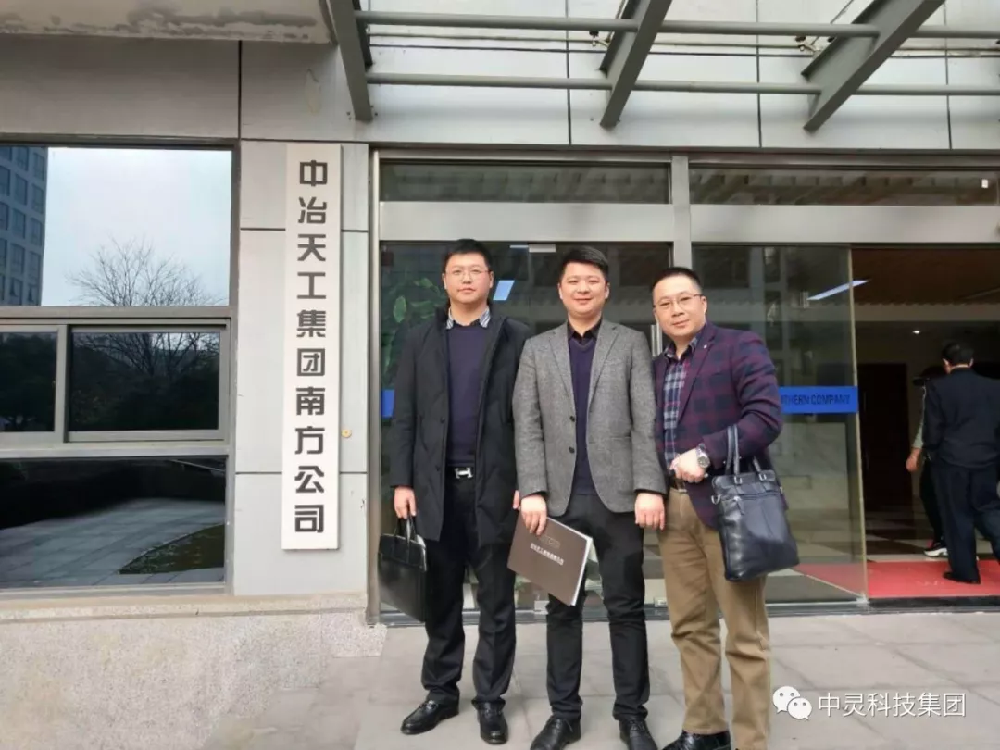

2018年12月23日，中灵科技(集团)公司董事长曾广林先生，总裁周志儒先生，高级顾问周扬先生等一行直飞上海，参与中冶天工集团南方公司邀请的业务合作会议。会议在上海中冶天工集团南方公司5楼会议室举行，双方就票据合作事宜达成战略高度。
中冶天工集团南方公司投资部唐副经理负责接待。唐经理非常详细地介绍了中冶天工集团南方公司的目前情况与未来的规划发展，重点就集团全年约320亿元票据业务如何导入中灵科技(集团)旗下票票库平台上进行交易，并提出了自己的看法和观点。中灵科技集团董事长曾广林先生也非常细致地介绍了公司的发展前景与票票库平台的功能和意义，双方对未来的共同发展相互支持等方面达成了合作意向。
中灵科技(集团)公司是湖南首家从事供应链金融服务的集团公司，旗下“票票库”是专业的“互联网+票据”撮合流转平台。中灵科技(集团)公司注册资金5000万元，拥有强大的行业技术专业团队和顶级的营销精英团队，公司本着“钟灵毓秀，合道兴昌”的企业精神和“同心同德，共享共赢”的企业宗旨，致力于打造国内一流，行业领军的“互联网+票据”的交易流转平台。
中灵科技（集团）与中冶天工集团南方公司未来的合作，意味着中灵科技（集团）面向全国中大型企业的合作奠定了坚实的基础，并具备了强大的服务体系，此次合作对公司的发展添上重重的一笔。